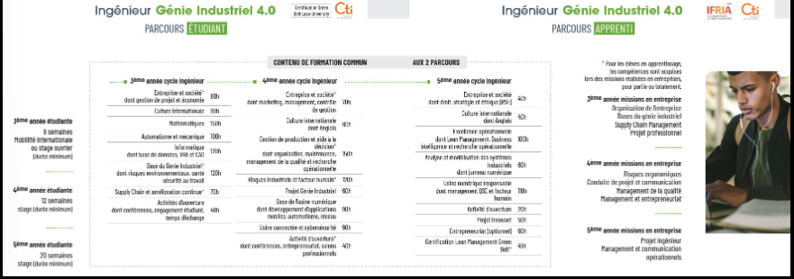

Objectifs
L’ingénieur Génie Industriel 4.0, conçoit et gère des processus et
des systèmes qui améliorent la qualité et la productivité de la chaîne de valeur des entreprises. Il
s’attarde à mieux faire les choses en réduisant les risques pour l’homme et l’environnement.
Il maîtrise la gestion des flux et des processus, les outils de l’usine numérique. Il sait innover,
modéliser, conduire des projets, manager en équipe, conduire le changement et mesurer et prévenir les
risques. Il s’inscrit dans une démarche d’amélioration continue en intégrant les multiples enjeux
économiques, sociaux, réglementaires et environnementaux.
Il exerce dans des secteurs très variés : aérospatial, agroalimentaire, automobile, aéronautique,
industries navales, conseil, transport, métallurgie, industries pharmaceutiques,...
Savoir-faire et compétences
Comprendre, analyser et répondre aux besoins de l’industrie en
déployant la technologie la plus adaptée.
Manager des équipes transverses et multiculturelles.
Conduire des projets complexes.
Animer la transition numérique de l’industrie et innover.
Promouvoir une démarche d’amélioration continue collaborative.
Proposer et animer des systèmes de management qui garantissent la maîtrise des risques industriels,
environnementaux ainsi ceux pour la santé/sécurité des salariés.

Contenu de la formation
Contrat de professionnalisation
La formation Génie Industriel 4.0 sous statut étudiant donne aux élèves la possibilité de faire sa
dernière année de cycle ingénieur en contrat de professionnalisation.
Tarif en contrat de professionnalisation (pris en charge par l’entreprise d’accueil et/ou son
OPCO).
Contrôle des connaissances
Tarifs
La pédagogie ENSIBS
Le socle scientifique et technique que doit posséder l’ingénieur est tout de suite mis en pratique au
travers de projets qui sont
proposés par les entreprises et/ou par la recherche.
Outils numériques, méthode des cas, formation à distance, serious games, classes inversées traversent
les disciplines et assurent l’acquisition de compétences recherchées par les professionnels.
L’évaluation des compétences acquises s’effectue en contrôle continu.
Une mobilité internationale de 3 à 6 mois doit être effectuée avec la possibilité d’un semestre ou d’une
double diplomation à l’étranger.
Stages
Stages et projets (exemples)
Formation d’un opérateur aux robots collaboratifs dans un environnement virtuel
Développement de méthodologie de systèmes de production dans un atelier pilote de bio plastiques
Amélioration du système de management QSE et mise en place d’une démarche environnementale
Réalisation d’un outil de gestion d’équipement de sécurité
3 stages
Stage en 1ère année de cycle ingénieur : 8 semaines minimum (mobilité internationale ou stage ouvrier)
Stage en 2èmes année de cycle ingénieur : 12 semaines minimum
Stage en 3ème année de cycle ingénieur : 20 semaines minimum
Taux de réussite
74%
Modalités de formation
Formation initiale
Formation en alternance
Référentiel RNCP
RNCP35797